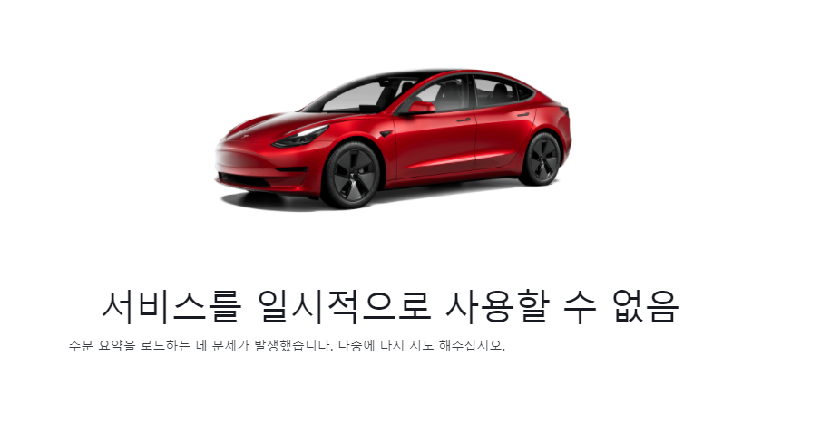

테슬라 모델 3는 2016년 3월 31일 테슬라에서 공개한 중형 전기 세단이다. 대한민국에서는 2019년 8월 13일에 공식 출시했다.
미국 프리미엄 자동차 시장에서 2018년 말 이후 판매량 1위, 미국 캘리포니아 주(세계 최대 자동차 시장인 미국에서 가장 자동차가 많은 주)에서 2020년 1분기 판매량 1위[1]를 차지하고 있으며,
한국에서 2020년 3월 가장 많이 팔린 수입 자동차이다.[2] 전 세계 프리미엄 세단 판매량 순위에서도 2021년 드디어 1위에 올랐다. 여담으로 나무위키 자동차 문서 중 손에 꼽을 정도로 방대한 문서량을 자랑한다.
